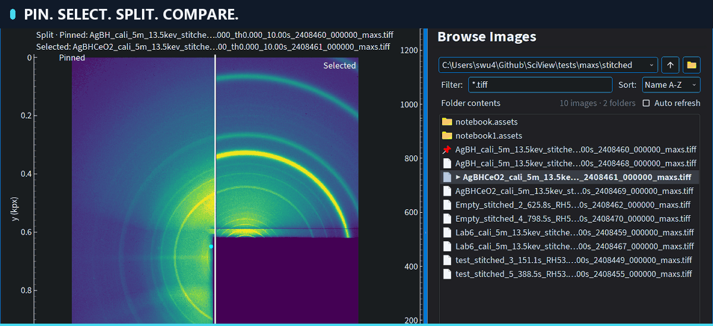
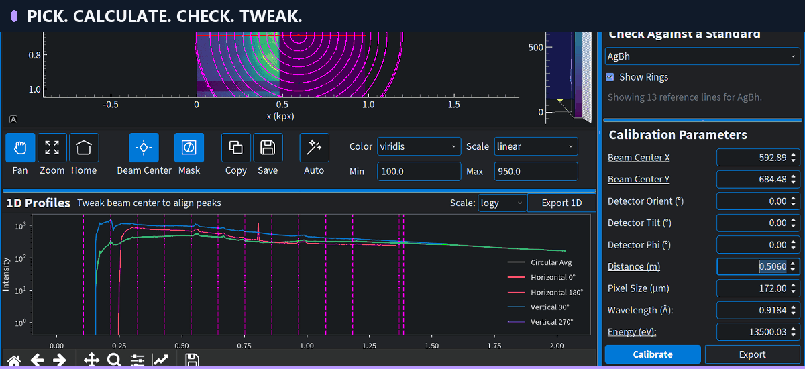
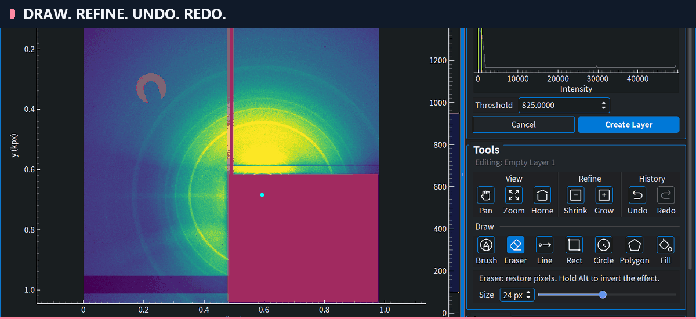
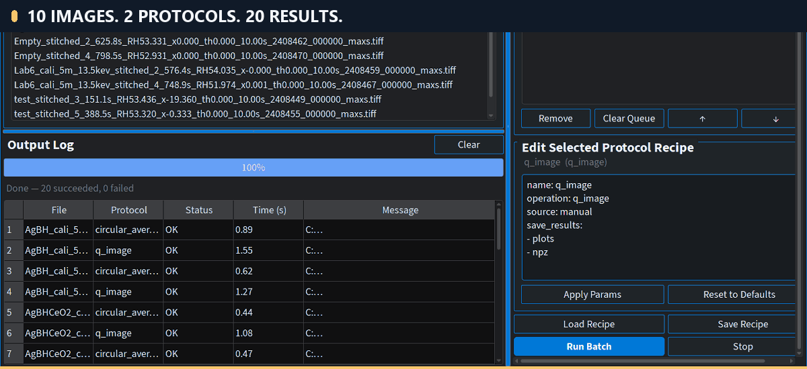

Four connected workflows. Direct interaction at every step.




Actual SciView screenshots. Zoom/pan, cursor highlights, and pacing are presentation edits. Calibration settings are for demonstration, not a certified calibration.